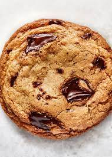
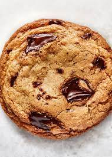

About Me
I live in Portland with my dog Rye. We spend a lot of time outdoors, running around and hiking.
Background:
- I have worked as a grocer for the past six years filling many roles.
- I revieced my bachelors of science in biology from the University of Iowa.
- I chose to try out programming to learn about new things.
Three things you should know about me:
- I have a dog.
- I like to cook.
- I enjoy reading
Here are some webpages I have made:
Feel free to visit just click on the links
- My favorite things
This is my first website, It uses html and css.
- Hello world
This is a website I copied and pasted most of the code off of the Epicodus website I used it to learn how to upload to git hub and save changes.
- Goodybye
This is a html file that I learned pair program through VScode with.
- Cookie recipe

This is a cookie recipe, yum! I didn't write it but I used it to learn about Markdown.
- Animal Shelter
This is an html file that I worked on with Donovan Webber. We used html show animals up for adoption and css to style the page.
- Boxes
This is html file that I used to continue practicing using css to format a webpage
- Decorator
This is a html file that I worked on with Tyler Emmerson, we put together images and formated them into columns.
- Paragraphs
This is an html file I used to learn about divs.
- Branching practice
This is an html file I used to learn about branching files in github.
Feel free to check out all the things I've worked on through git hub
Feel free to visit just click on the links
- My favorite things
- Hello world
- Goodybye
- Cookie recipe 
- Animal Shelter
- Boxes
- Decorator
- Paragraphs
- Branching practice
This is my first website, It uses html and css.
This is a website I copied and pasted most of the code off of the Epicodus website I used it to learn how to upload to git hub and save changes.
This is a html file that I learned pair program through VScode with.
This is a cookie recipe, yum! I didn't write it but I used it to learn about Markdown.
This is an html file that I worked on with Donovan Webber. We used html show animals up for adoption and css to style the page.
This is html file that I used to continue practicing using css to format a webpage
This is a html file that I worked on with Tyler Emmerson, we put together images and formated them into columns.
This is an html file I used to learn about divs.
This is an html file I used to learn about branching files in github.